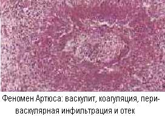

Иммунокомплексные Артюс-подобные реакции.
В 1903 году Н.-М.Артюс и М.Бретон обнаружили, что на месте внутрикожного введения антигена сенсибилизированному кролику через 1-2 часа появляется отек и краснота, которые прогрессируют и формируют своеобразный инфильтрат. При тяжелом течении примерно через 12 часов может развиться геморрагический некроз. Обычно, инфильтрат рассасывается за 48 часов.
Отличительная особенность реакции Артюса - нахождение антигена и антител по разные стороны сосудистой стенки. Антиген из ткани и антитела из сосудистого русла диффундируют навстречу друг другу, причем преципитация происходит либо в ткани на месте введения антигена, либо периваскулярно, либо в самой сосудистой стенке.
Классическая реакция Артюса у человека наблюдается нередко: таков, например, механизм развития асептических постинъекционных инфильтратов при внутрикожном введении медленно резорбирующихся антигенных и гаптенных лекарств или при многократной инъекции антирабической вакцины. Медперсоналу приходится в этих случаях поволноваться из-за возможных со стороны пациента обвинений в нестерильности инъекции и причинении “абсцесса.”

Большое дифференциально-диагностическое значение имеют в пневмоаллергологии аллергические альвеолиты грибкового происхождения, развивающиеся при ингаляции , прежде всего, некоторых плесневых аллергенов, в основном, несовершенных грибов-гифомицетов, особенно при регулярных повторных воздействиях.
Примером могут служить профессиональные аллергические альвеолиты (ПАА), впервые описанные как “астма мукомолов” еще в 1700 году итальянским врачом Б.Рамаццини. При ПАА в сыворотке больных обнаруживаются преципитирующие антитела к грибковым и некоторым бактериальным аллергенам ("легкие фермера", "легкие птичника", “легкие сыровара”, "легкие молотильщика", “лёгкие пивовара”, “лёгкие завсегдатая саун”, багассоз, биссиноз, “легкие грибовода” и другие аллергические интерстициальные пневмонии и пневмопатии - см. табл. 8). Во многом, аналогичные процессы вызывают во рту актиномицеты при заболеваниях пародонта.
Таблица 8
Аллергические иммунокомплексные альвеолиты
Заболевание |
Профессиональный фактор |
Антиген |
Легкие фермера |
измельчённое сено |
Micropolyspora faeni |
Легкие птичника |
выделения птиц |
белки сыворотки птиц и Aspergillus, термофильные актиномицеты |
Легкие сыровара |
Молотый сыр |
Penicillum casei |
Легкие пильщика |
опилки и щепа кедра, красного дерева. Клёна |
Criptostroma corticale, термофильные актиномицеты |
Лёгкие грибовода |
навоз, компост, грибы |
Mecetomonospora vulgaris, термофильные актиномицеты |
Лёгкие завсегдатая саун |
загрязненный пар |
Aspergillus pullulans |
Альвеолит кондиционированных помещений |
Увлажнённый и кондиционированный воздух |
термофильные актиномицеты |
Лёгкие прачек |
Фермент-содержащие синтетические моющие средства |
Алкалаза Bacillus subtilis |
Лекарственный альвеолит |
ингалируемые лекарства и поллютанты |
интал, нитрофураны, хиноидин и др. |
Багассоз |
измельчённый сахарный тростник |
термофильные актиномицеты |
Биссиноз |
хлопковая пыль |
Aspergillus fumigatus |
Секвиоз |
плесень секвойи |
Graphium, Ameriobasidium pullulаns |
Субероз |
сапрофиты мокроты |
Актиномицеты, термофилы |
Легкое обдирщиков кленовой коры |
Плесень коры клёна |
Corticostroneo corticale |
Альвеолит, провоцируемый пшеничным долгоносиком |
Плесень зерновых |
Sitophilus graharius |
ПАА - собирательное понятие для воспалительных процессов, протекающих в стенках альвеол и интерстиции. Основную роль в их этиологии играют грибы или их споры, а также актиномицеты. Нижеследующий пример касается профессиональной патологии (Л.Николаеску и соавт.,1979):
"Легкое фермера" - результат вдыхания микрополиспоры - Micropolyspora faeni из покрытого плесенью сена. Типичная картина болезни характеризуется после 4 - 12 часовой экспозиции появлением одышки, кашля с мокротой, утомления, повышается температура. Эти симптомы сохраняются в течение многих часов и суток.
При этом, в результате реакции атиген-антитело, развиваются изменения по типу феномена Артюса со скоплением полиморфноядерных лейкоцитов, деструкцией альвеол и интерстициальной ткани легкого. В последующем наблюдается мононуклеарная инфильтрация вплоть до образования зародышевых центров и гранулем, состоящих из эпителиальных и гигантских клеток. Такие гранулёматозные формы называют иногда "гранулёматозным пневмонитом". Начавшись, как иммунокомплексный процесс, АА развивается с подключением механизмов клеточного иммунитета, типа ГЗТ.
В практике пневмоаллергологии чрезвычайную важность представляет острый и подострый бронхолегочный аспергиллез, вызываемый повсеместно распространенным грибком Aspergillus fumigatus, реже - Aspergillus niger et flavus. Механизмы этой болезни представляют своеобразную комбинацию иммунокомплексных процессов, описанных выше и анафилактической реакции. В результате формируется синдром АА, трудноотличимый от бронхиальной астмы. В легких возникают эозинофильные инфильтраты, а кашель имеет, в отличие от астмы, продуктивный характер.
Интересно, что впервые острый аллергический аспергиллез был описан, как "фараонова болезнь" у египтологов, вскрывших гробницу Тутанхамона, причем тяжесть поражений обусловила даже летальный исход.
Аспергилл сапрофитирует на органических остатках, в связи с чем с аспергиллез может быть эпидемиологически замаскирован под анафилаксию против домашних птиц, растений, домашней пыли, профессиональную астму. Аллергия к перевязочному материалу, описанная у персонала гнойных хирургических отделений, представляет собой аспергиллез. К тому же, данное заболевание часто осложняет первичную атопическую астму. Перефразируя известное латинское изречение “Per aspera ad astra”, можно сказать, что путь к правильному диагнозу в астмологии иногда лежит “Per aspera ad asthma”, имея ввиду, что для верификации диагноза бронхиальной астмы приходится порой отводить другие возможные причины астмоподобного бронхита и бронхоальвеолита: аспирационный синдром, аспириновую идиосинкразию и, наконец, аспергиллёз.
Кроме Aspergillus, по данным А.Д.Адо (1978), немалое значение как аэроаллергены, вызывающие иммунокомплексные и анафилактические реакции, имеют споры грибов-гифомицетов родов Cladosporium, Alternaria и Fusarium.
|
|
|
|
|